Here I show the flashy bits of some of the assignments I did during the masters, acknowledging that most of the actual work doesn't make it into a nice graph or animation.
Earth Molniya orbit design given some basic orbit parameters, with the objective of comparing to a real life object found through publicly available data and modelling the most important perturbations, in MATLAB. This was one of the most interesting projects I did, and motivated me to read a chapter of a book about perturbations, and implementing the EGM96 model, relativistic effects, etc.
I went ahead and did these two animations using the same software. That was probably a mistake, it was hell on Earth to make, and motivated me to learn Blender for the same purpose later.
Some figures:
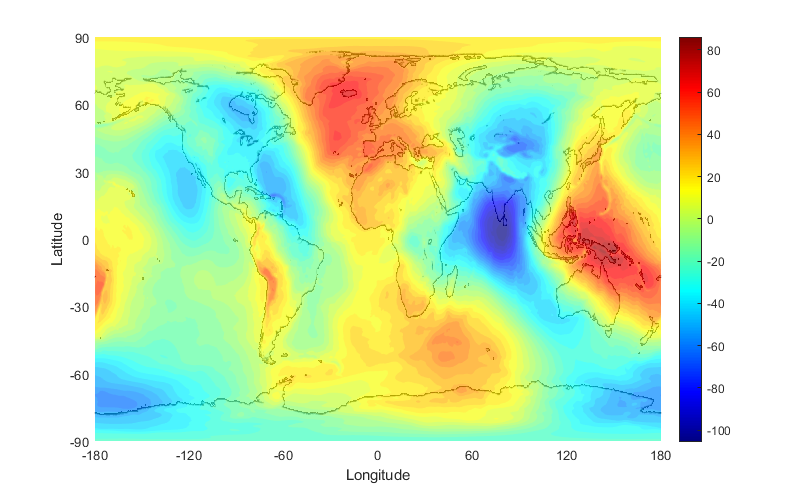
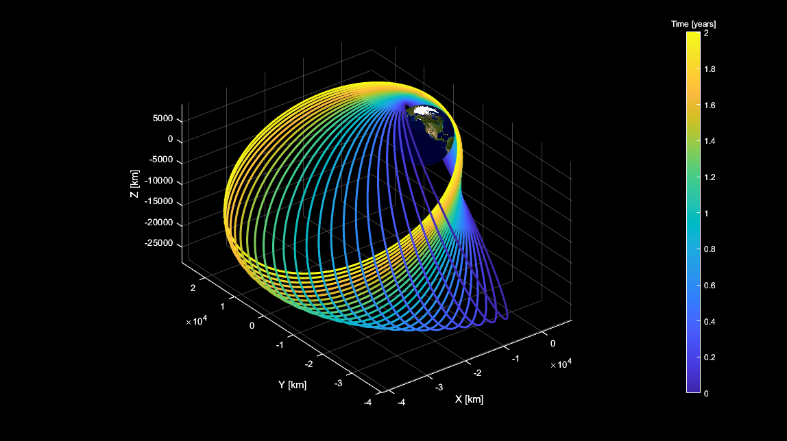
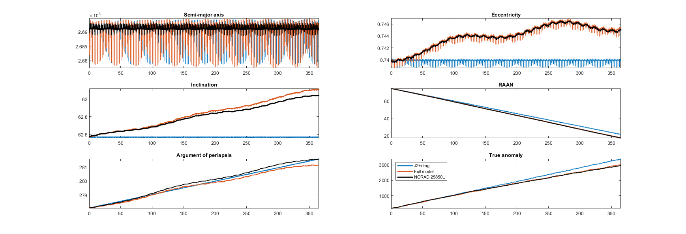
The project had a second part about an interplanetary transfer.
Control and simulation of satellite attitude dynamics using MATLAB Simulink. Orbit trajectory computed using MATLAB and drawn with Blender.
Concept design of a 3-stage partially recoverable (parachute) missile system to deliver a non-military payload with a range of ~250km. Missile trajectory computed with MATLAB and drawn with Blender.
Some were omitted.
Preliminary design of the New Horizons mission to Pluto and the Juno mission to Jupiter through reverse engineering. The different major subsystems were designed with the depth one would expect from a systems engineering standpoint at a Pre-A stage, including: mission definition (goals, drivers, phases...), mission analysis (mainly trajectory), propulsion, telecommand & telecommunications, attitude control, thermal control, electrical power, on-board data handling and configuration. Some figures from the Juno assignment:
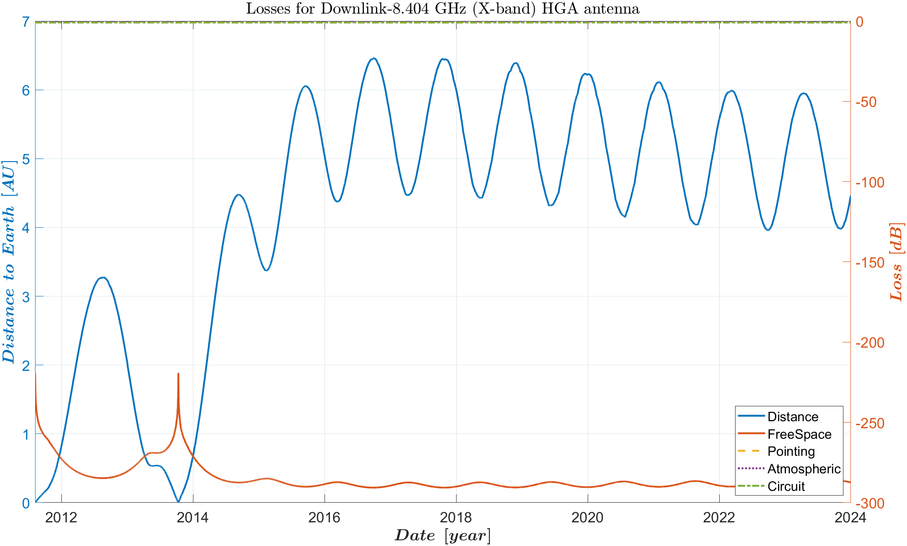
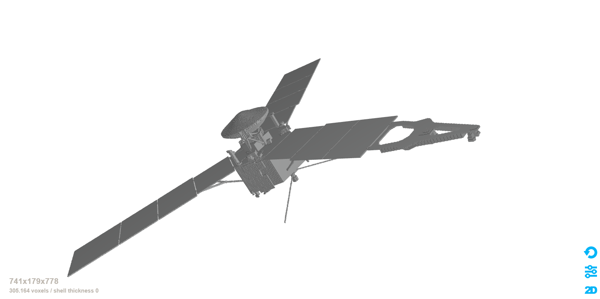
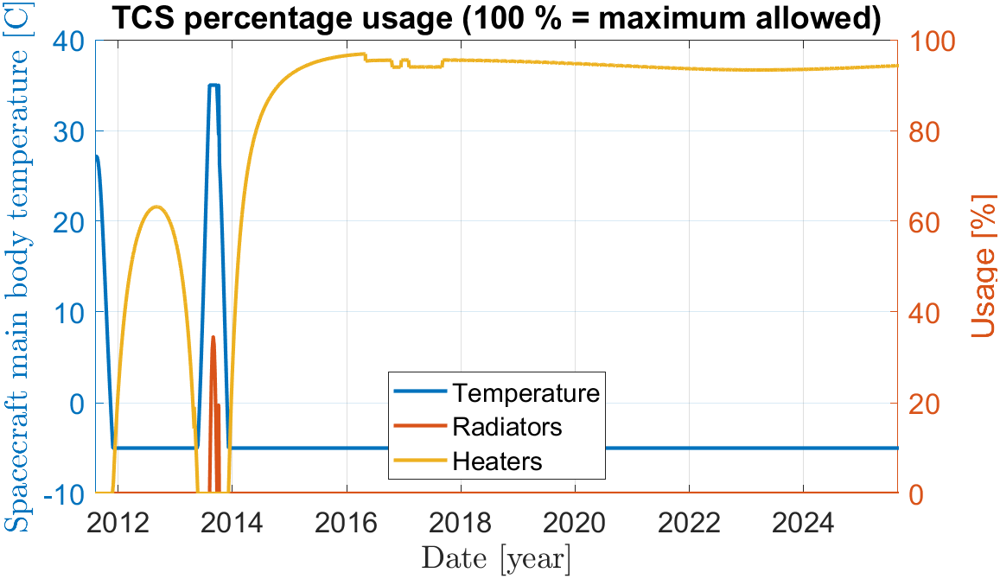
One-week long workshop for the design of a pressure-fed liquid propellant rocket motor. The team and task was considerable, and the time available was very short, but it ended up being one of the most unique projects I've ever done. I used MATLAB for the parts I worked on: thermal analysis, basic injector design and cooling solutions (ablative, heat sink, regenerative, liquid film). The design was to be performed for two propellant pairs (one more eco-friendly than the other) and three thrust targets (nominal, half and double thrust). Here are some images for the nominal thrust with the (more) toxic propellant pair of MMH and NTO:
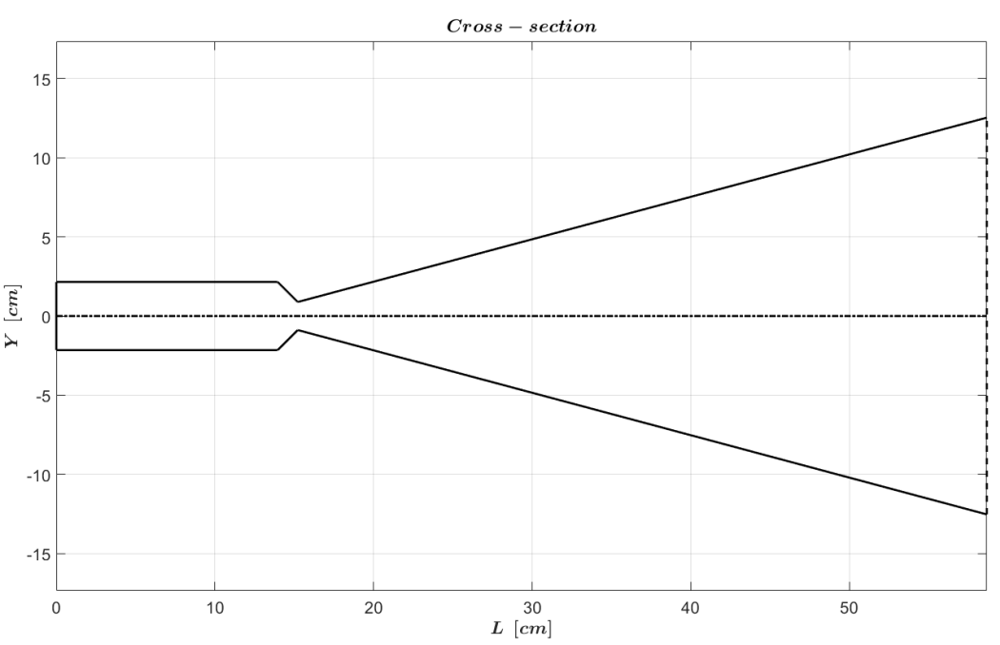
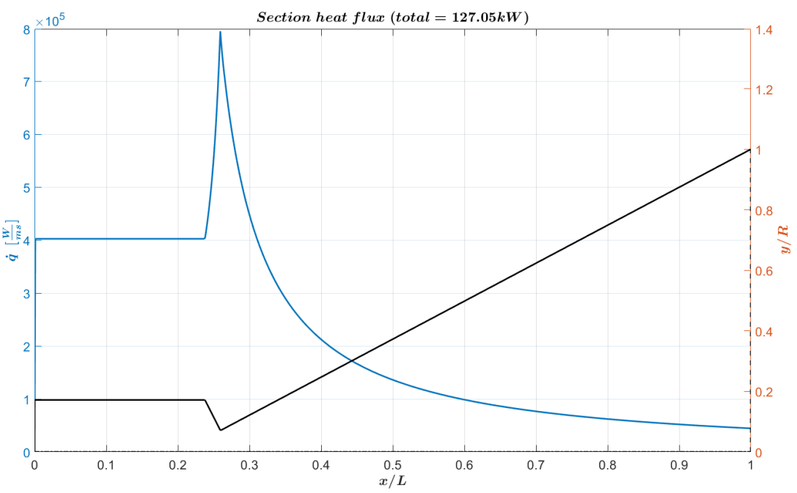
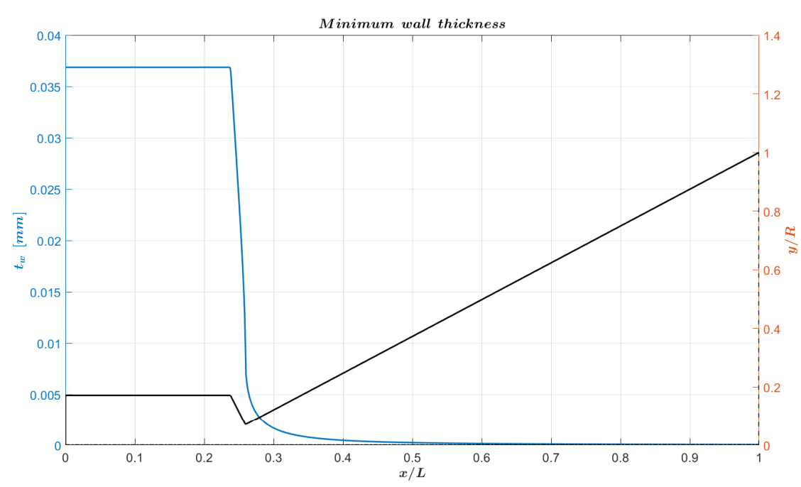
A much smaller assignment consisted in the internal ballistic analysis of solid rocket motors. From Ballistic Test and Evaluation System (BATES) results at the lab (pressure traces), Vielle's law parameters were statistically derived to get the expected performance.
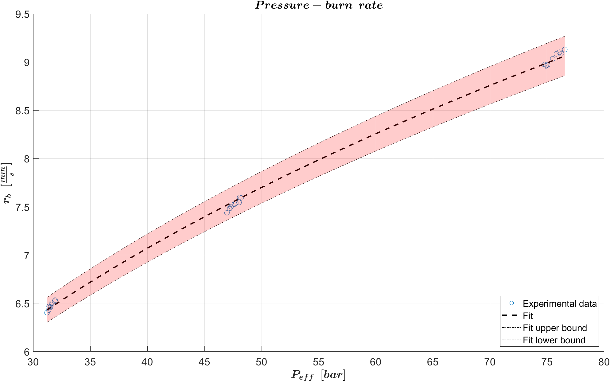
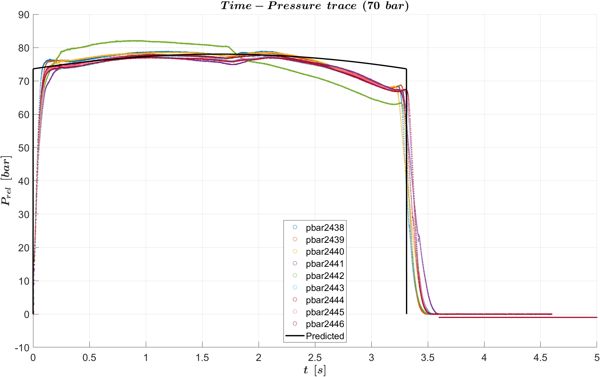
Preliminary design of an instrument with the same goals as KaRIn in the SWOT mission. Using MATLAB as well, I worked in the environmental analysis (specifically tides, atmospheric attenuation and orbit perturbations) , orbit design (accounting for tidal aliasing and tidal separability requirements) and InSAR setup: radar equation and interferometric baseline preliminary design. Very lengthy, well researched and interesting for me.
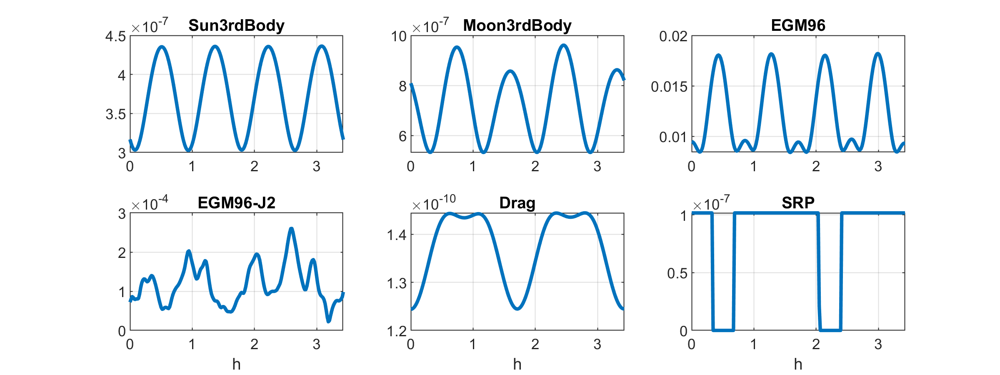
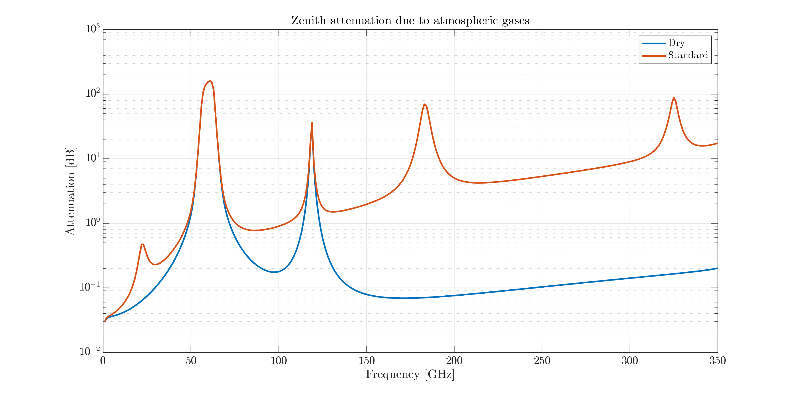
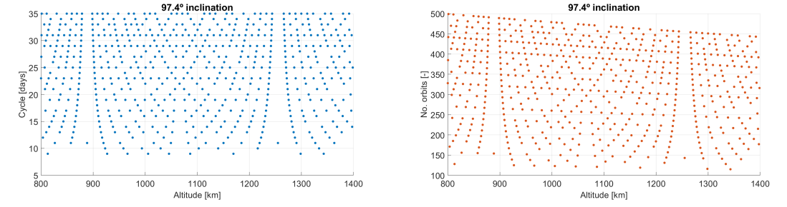
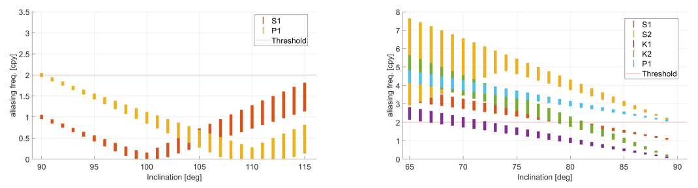
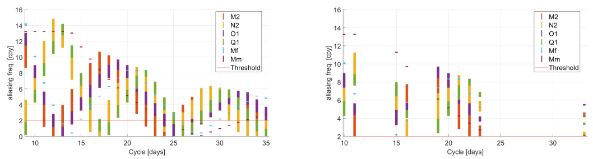
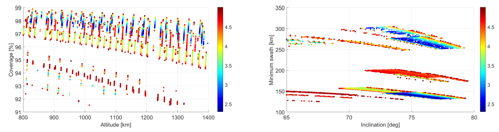
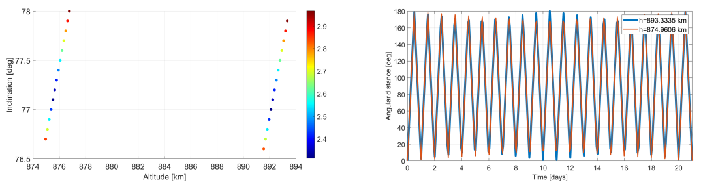
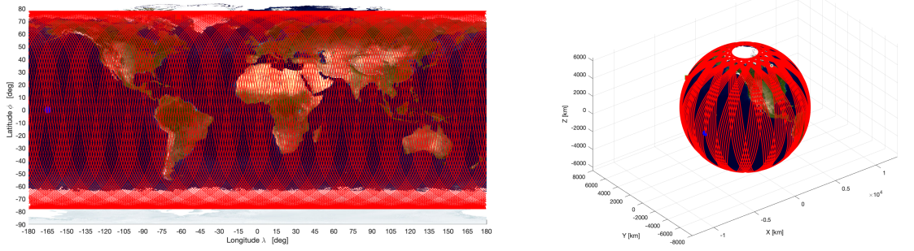